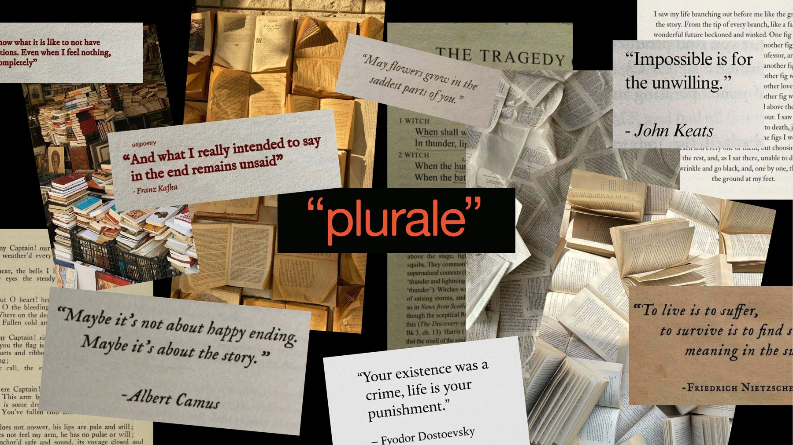
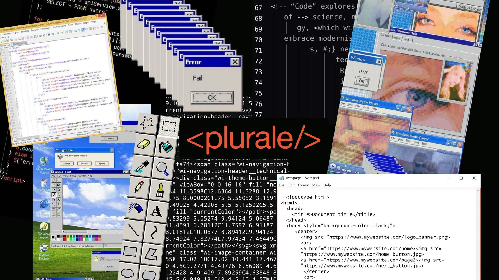
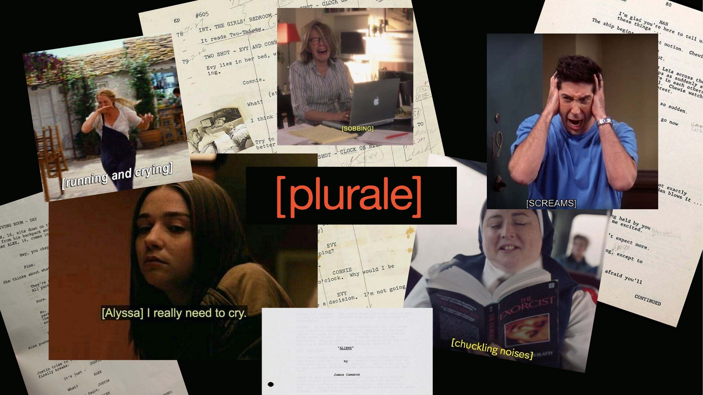

PLURALE
Dall’individualismo all’interdipendenza: strategie editoriali e pratiche sistemiche per la salute socialeCi prendiamo cura del corpo e della mente come mai prima, eppure la solitudine continua a crescere, soprattutto tra i giovani adulti. Non è un malessere individuale, ma l’effetto di una società fondata sulla performance e sulla competizione, che toglie spazio alle relazioni e mina il terzo pilastro della salute: la salute sociale. Da qui nasce Plurale, un sistema editoriale fatto di una rivista, eventi e una piattaforma web, che prova a ridare tempo e forma all’interdipendenza attraverso esperienze partecipate e collettive.
TESI
SYSTEMIC DESIGN
EDITORIA
2026

“Che si riferisce a più persone o cose, che indica o esprime il concetto della molteplicità.”
COS’È PLURALE
Plurale è un sistema pensato come una enabling solution: non risolve il problema al posto delle persone, ma crea le condizioni perché possano affrontarlo insieme. Non una cura per la solitudine, quindi, ma un dispositivo che restituisce alle persone il tempo e lo spazio per incontrarsi e per imparare, di nuovo, a fidarsi degli altri.
Alla base c’è l’interdipendenza. Viviamo in una società che tratta l’indipendenza come uno status a cui aspirare, e dipendere da qualcuno viene visto come una fragilità da correggere. Ma dipendere dagli altri non è un limite alla nostra libertà: è la condizione stessa dell’esistenza umana.

LA RIVISTA
Al centro del sistema c’è la rivista. Ogni numero parte da un verbo che negli ultimi anni si è caricato di nuovi significati, come connettersi, recensire o condividere: partire da azioni quotidiane rende i temi più vicini e riconoscibili. Il primo numero è dedicato a Connettersi, il verbo che più di tutti racconta il desiderio di legami e, insieme, l’iperconnessione che spesso produce il suo opposto.

Una sovracoperta tiene insieme tre fascicoli e, aperta, diventa un poster con il verbo del numero e il manifesto di Plurale. Tra i fascicoli non esiste una gerarchia: sul dorso c’è solo il numero e il verbo, e nessuno viene prima degli altri. Si può iniziare da quello che si preferisce.


UN’IDENTITÀ VARIABILE
Non imporre un ordine di lettura e, insieme, distinguere i fascicoli ha richiesto un’identità variabile. Al logotipo si associano dei segni di punteggiatura: l’unico strumento che restituisce l’intenzione nella scrittura, che trasforma un’affermazione in una domanda o introduce una pausa.

TRE FASCICOLI, TRE PUNTI DI VISTA
I tre fascicoli condividono la stessa scritta in copertina, circondata ogni volta da segni di punteggiatura diversi: non decorazioni, ma indizi di ciò che si trova all’interno. Ognuno affronta lo stesso verbo da un punto di vista completamente diverso, dando voce a tre modi di informarsi e al lettore una visione d’insieme, con più livelli di approfondimento.
“PLURALE”
Le virgolette alte sono il segno della citazione, della voce presa in prestito. È il fascicolo della letteratura: saggi e articoli di giornalisti, psicologi, sociologi e ricercatori che offrono una prospettiva autorevole e documentata.

<PLURALE/>
La sintassi del codice racconta come il tema vive nei media digitali: articoli, post, podcast e contenuti audiovisivi selezionati dalla rete, un’informazione diversa dalla letteratura ma ugualmente presente nel nostro quotidiano.

[PLURALE]
Le parentesi quadre sono quelle che, nei copioni, indicano i gesti e ciò che non si dice ma si mostra. Il fascicolo mette al centro le esperienze delle persone: interviste e casi studio che si mettono in ascolto del loro punto di vista sul tema.

GLI EVENTI
Una rivista non può reggersi da sola: ha bisogno di occasioni che la facciano circolare e riuniscano le persone attorno ai contenuti. Ogni numero esce con un evento di lancio, in cui i partecipanti rispondono alla domanda “cosa significa per te connettersi?” con una definizione, un’immagine o un ricordo da scambiare con uno sconosciuto.
Nei mesi tra un numero e l’altro, appuntamenti fissi creano ritualità: plurale “CLUB”, un club di lettura; plurale <TALK/>, un confronto pubblico con gli ospiti del numero; plurale [LAB], un laboratorio condotto da una delle realtà intervistate. Ogni format si tiene sempre nello stesso luogo, e l’anno si chiude con Plurale Fest, dove i lettori scelgono insieme i verbi dei numeri futuri.


LA PIATTAFORMA WEB
Il sito tiene insieme tutto il sistema: si acquistano la rivista e l’abbonamento, ci si iscrive agli eventi e si rivivono quelli passati. Di ogni numero si può scaricare gratuitamente una versione digitale parziale, e il vocabolario raccoglie le parole chiave dei numeri, a cui chiunque può aggiungere la propria definizione: un archivio collettivo sempre aperto.


COMUNITÀ INTENZIONALI
Plurale non risolve l’isolamento, ma prova a far riscoprire il valore della comunità. Risponde ai tratti che Ezio Manzini attribuisce alle comunità intenzionali, aperte, leggere e progettate: possibilità di scelta, costruzione per parti, rigenerazione continua, spazio di opportunità, ambienti ibridi e formazione di coalizioni.
La domanda di partenza non trova una risposta definitiva: può solo essere praticata, numero dopo numero, incontro dopo incontro.